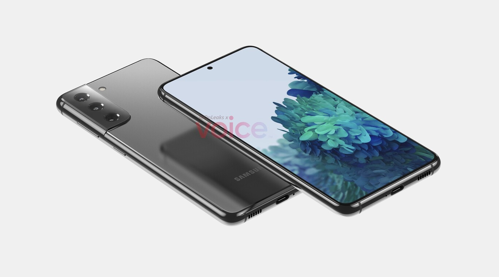
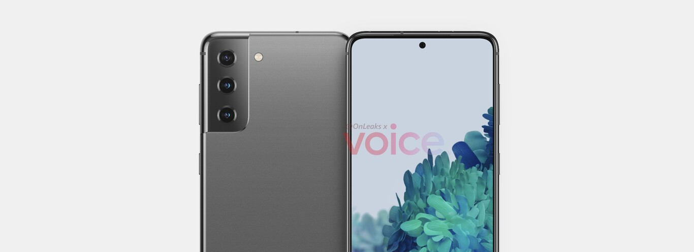
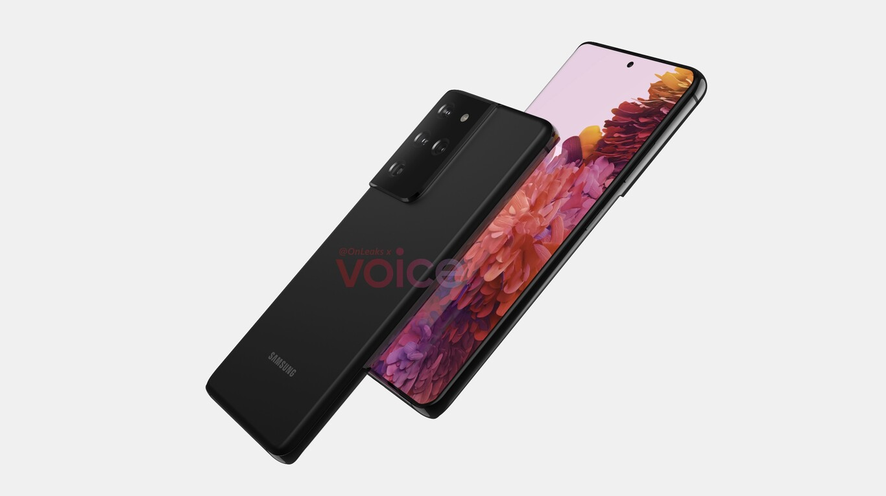

La primera filtración de los posibles Samsung Galaxy S21 y S21 Ultra deja ver el nuevo diseño y su fecha de lanzamiento

Samsung Galaxy S21 y S21 Ultra apuntan a ser los próximos teléfonos de gama alta de Samsung. La nueva generación llegará a principios de 2021 si se mantiene la hoja de lanzamientos que hemos visto en años anteriores. Sin embargo, hasta que esta fecha llegue, va a aparecer alguna que otra filtración sobre ellos. La de hoy nos muestra su renovado diseño con un sistema de cámaras más grueso y pantalla plana.
La filtración llega de la mano de Steve Hemmerstoffer (conocido como @OnLeaks). Si bien a su favor cuenta con un enorme historial de aciertos en cuanto a filtración de teléfonos se refiere, siguen sin ser diseños definitivos ni oficiales. No obstante, nos permite ver qué podemos esperarnos de cara a los próximos meses por parte de Samsung. Veamos qué podrían traer los Samsung Galaxy S21 y S21 Ultra.
Ligeros cambios de diseño donde resalta el sistema de cámaras
Según los renders publicados por @OnLeaks del Galaxy S21 y del S21 Ultra, apenas vemos diferencias en la parte frontal con respecto a la generación actual de los Galaxy S20. Se mantiene un orificio para la cámara frontal y tamaños de 6,2 pulgadas para el S21 y aproximadamente 6,9 pulgadas para el S21 Ultra.
Los cambios importantes los vemos en la parte trasera del teléfono, concretamente en el sistema de cámaras. En el S21 hay un total de tres lentes mientras que en el S21 Ultra hay hasta cuatro lentes. La protuberancia del sistema de cámaras ahora sin embargo ha cambiado, deja de ser una "isla" para unirse directamente con el borde de la esquina superior izquierda. Se espera que este bulto para las cámaras sea de aproximadamente 1,1 mm en el S21 y de 1,9 mm en el S21 Ultra.
Normalmente OnLeaks consigue diseños CAD de los futuros teléfonos de los fabricantes y de ahí saca conclusiones de sus características. Estos diseños CAD se utilizan para crear modelos 3D y tener las medidas exactas del producto. Es por ello que si bien no tiene detalles de la capacidad de las baterías o especificaciones internas, sí que puede afirmar con confianza cuáles serán sus medidas exactas. El S21 tendrá un tamaño de 151.7 x 71.2 x 7.9 mm mientras que el S21 Ultra medirá 165,1 x 75,6 x 8,9 mm.
De momento sin embargo son sólo renders y ningún dato oficial por parte de Samsung. Se espera que esta vez sean presentados un poco antes de lo normal, en enero de 2021. Ahora falta por ver cuántas versiones exactamente, colores, especificaciones internas y sobre todo precios finales. Lo sabremos en unos meses, o antes si aparecen más filtraciones.